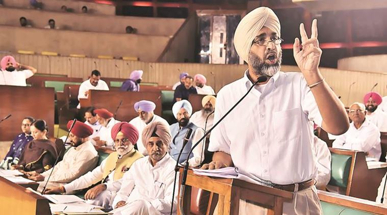
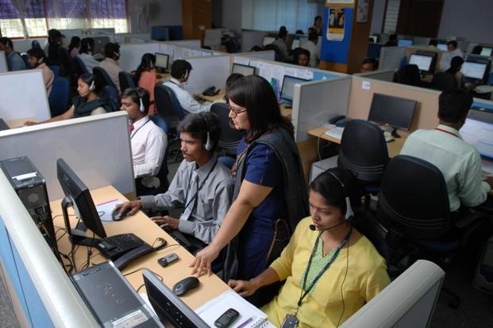
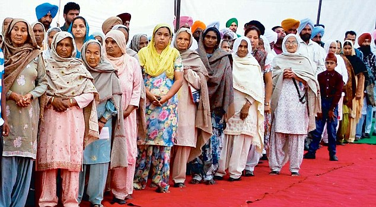
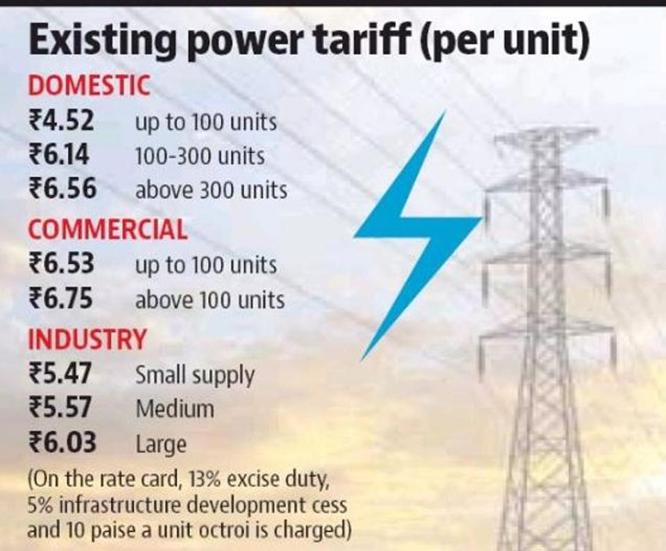
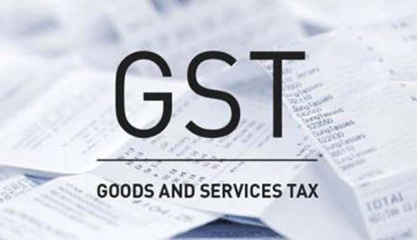
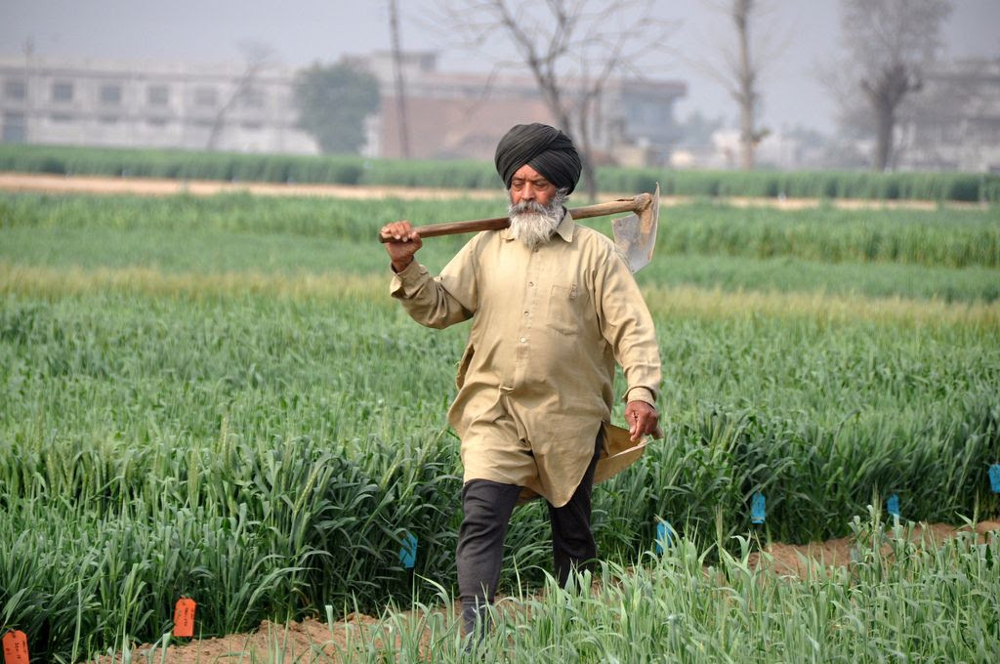
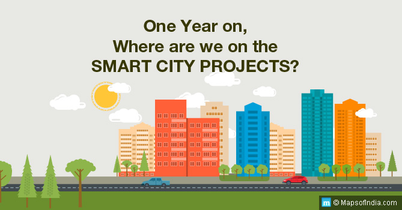
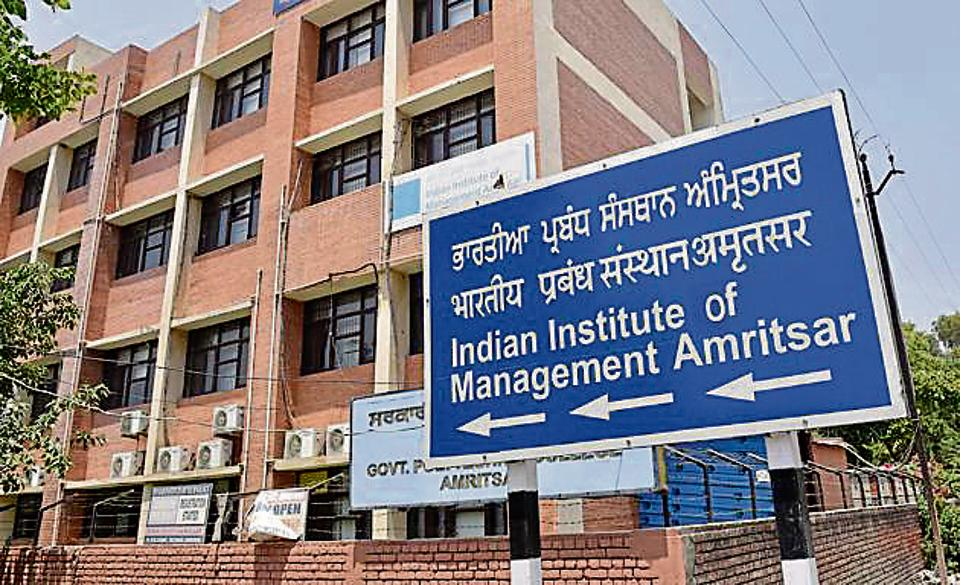

|
Finance minister Manpreet Badal presented a budget of Rs 1.18 lakh crore for the financial year 2017-18 for Punjab. Presenting his maiden budget as a part of the Capt Amarinder Singh government, Badal said Punjab’s outstanding debt will be Rs 1.95 lakh crore by the end of the financial year. He earmarked Rs 1,500 crore for waiving crop loans of distressed farmers. Manpreet has an unenviable task. The state finances are in dire straits and he has to implement the lofty promises made by his party ahead of the 2017 polls. The FM, who was the architect of the Congress manifesto, has tried a balancing act between fiscal prudence and poll promises. HT looks at 10 takeaways from the first budget of the new govt: |
 |
Key Points of Budget 2017 |
|
|---|---|
1. FINANCIAL MESS A WORRY |
 |
| The government inherited a fiscal crisis, as the previous government while demitting office left huge pending liabilities with the treasury virtually lying closed. The Reserve Bank of India (RBI) also suspended payments to the state government. Unpaid liability of welfare schemes, dearness allowance and power subsidy added to fiscal woes. Worse, the full extent of the financial problem is still not known and a special audit is being planned. A testing situation it is. | |
|
|
2. DEBT JUST KEEPS MOUNTING |
|---|---|
| The state’s debt has been the most talked about issue for years, but that has not had any impact. It just keeps going up. Though the previous regime had shown outstanding debt as Rs 1.48 lakh crore at the end of 2016-17, the white paper brought out by the Congress government revised the figure to Rs 1.87 crore. The budget estimates for 2017-18 have pegged it at Rs 1.95 lakh crore at the end of the current fiscal. |
3. REVENUE DEFICIT RISING |
|
|---|---|
| Revenue deficit, which indicates excess of revenue expenditure over revenue receipts, is a reason for worry. The deficit saw a slight dip in 2013-14, but has been going up since. Last year, the finance minister pegged it at Rs 7,983 crore, 1.76% of gross state domestic product (GSDP). However, it rose to Rs 11,362 crore in 2016-17 revised estimates. This year, it is estimated to go to Rs 14,784 crore. The number implies lower availability of funds for meeting revenue expenditure and increased dependence on borrowed money. |
|  | 4. SALARY AND PAY OUTGO |
|---|---|
| Committed liabilities are a huge burden on the state exchequer, eating into bulk of its revenue. In financial year 2017-18, the outgo on salary, pensions and retirement benefits will eat away three-fourth of the state’s own tax revenue – Rs 31,019 crore out of Rs 39,526 crore. The salary and pensions bill has been rising consistently. The state employees get higher wages than their counterparts in most other states, but another pay hike is on the cards |
5. FIVE-FIGURE POWER SUBSIDY |
 |
|---|---|
| Chief minister Capt Amarinder Singh has appealed to big farmers to forego their power subsidy. Whether the give-it-up slogan works or not will be known in a few months but the subsidy continues to increase, crossing the five-figure mark for the first time. The government has pegged the subsidy at Rs 10,255 crore in budget estimates 2017-18, up from Rs 8,966 crore, due to increased consumption and thousands of new tubewell connections released by the previous government. |
|  | 6. COUNTING ON GST |
|---|---|
| Constrained by the state’s fiscal crisis, the state government is counting on the Goods and Services Tax (GST) that kicks in on July 1, with the finance minister hoping that his revenues would double in the next years due to 14% increase promised by the Centre. Being a consumption state, Punjab is expected to benefit from the new tax regime. |
7. AGRICULTURE GETS ATTENTION |
 |
|---|---|
| With farmers getting restless due to dwindling yields and mounting losses, the sector needed immediate attention. Besides announcing a waiver of crop loans and hike in crop damage compensation, the government is looking at ways to modernise agriculture by investing more funds and improving marketing of their produce. Agriculture Produce Marking Act is being amended to ensure direct access to national and international markets, said the FM in his speech. |
8. JOBS, JOBS, JOBS |
|
|---|---|
| Unemployment being a huge political issue, the budget focuses on job creation big time. Cabs, tractors, setting up enterprise and skill upgrading are just some of the innovative initiatives being planned by the new government. Already, it is in talks with app-based cab aggregators, Uber and Ola, to introduce cabs in different cities. “We hope to create one lakh additional jobs every year,” said the finance minister. Other schemes also have potential. |
9. FILIP TO URBAN AREA PROJECTS |
 |
|---|---|
| Reeling under financial crunch due to delay in release of over 80% of funds received from the Centre, the local bodies department can finally start to implement its projects. Its outlay has been more than doubled from Rs 2,268 crore to Rs 4,610 crore for projects such as Smart Cities, AMRUT and Swachh Bharat Mission. With a pushy minister at the helm, things can finally get moving. |
|  | 10. REAL ESTATE REVIVAL |
|---|---|
| A major source of revenue for long, the real estate sector hit by slowdown is on the government radar. A massive 3% cut in stamp duty, reducing it to 6% from the existing 9%, is likely to give a boost to demand and help revive the sector. The relief will remain in place till the end of the current year. |